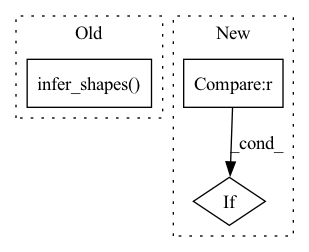

Pattern ID :27591
Before Change
def infer_shapes(onnx_path, out_path):
try:
SymbolicShapeInference.infer_shapes( onnx_path, out_path)
except SystemExit:
raise ShapeInferenceError("Unable to infer shapes for ONNX model.")
After Change
verbose = 0
onnx_opset = get_opset(onnx_model)
if not onnx_opset or onnx_opset < 7 :
raise ShapeInferenceError(
"Only support models of onnx opset 7 and above.")
In pattern: SUPERPATTERN
Frequency: 3
Non-data size: 3
Instances Fragment ID: 81934871
Project Name: spcl/daceml
Commit Name: 91dec501f1642fce939e778ad114935f3bcd5fb8
Time: 2020-09-08
Author: oliverrausch99@gmail.com
File Name: daceml/onnx/shape_inference/shape_inference.py
M Class Name: AnonimousClass
N Class Name: AnonimousClass
M Method Name: infer_shapes(1)
N Method Name: infer_shapes(2)
M Parent Class:
N Parent Class:
M File Name: daceml/onnx/shape_inference/shape_inference.py
N File Name: daceml/onnx/shape_inference/shape_inference.py
M Start Line: 8
M End Line: 12
N Start Line: 9
N End Line: 30
Before Change
def infer_shapes(onnx_model):
return SymbolicShapeInference.infer_shapes( onnx_model)
After Change
verbose = 0
onnx_opset = get_opset(onnx_model)
if not onnx_opset or onnx_opset < 7 :
raise ShapeInferenceError(
"Only support models of onnx opset 7 and above.")
Fragment ID: 81934868
Project Name: spcl/daceml
Commit Name: dad3f8aa31504fc116b1e29ad92d096140e151c7
Time: 2021-03-01
Author: oliverrausch99@gmail.com
File Name: daceml/onnx/shape_inference/shape_inference.py
M Class Name: AnonimousClass
N Class Name: AnonimousClass
M Method Name: infer_shapes(1)
N Method Name: infer_shapes(1)
M Parent Class:
N Parent Class:
M File Name: daceml/onnx/shape_inference/shape_inference.py
N File Name: daceml/onnx/shape_inference/shape_inference.py
M Start Line: 5
M End Line: 5
N Start Line: 9
N End Line: 30
Before Change
self.model = model
input_names = [ "actual_input_1" ]
torch.onnx.export(self.model, dummy_inputs, "model.onnx", verbose=True, input_names=input_names, opset_version=12)
SymbolicShapeInference.infer_shapes( "model.onnx", "shape_infer.onnx")
onnx_model = onnx.load("./shape_infer.onnx")
self.dace_model = ONNXModel("dace_model", onnx_model)
self.sdfg = self.dace_model.sdfgAfter Change
self.model = model
self.sdfg = None
if dummy_inputs is not None :
self.initialize_sdfg(dummy_inputs)
def initialize_sdfg(self, dummy_inputs): Fragment ID: 81934869
Project Name: spcl/daceml
Commit Name: cb700ea4ccaba3a8bfcb6803a25a26a9e853393e
Time: 2020-09-08
Author: shigang.li@inf.ethz.ch
File Name: daceml/pytorch/module.py
M Class Name: DACEModule
N Class Name: DACEModule
M Method Name: __init__(3)
N Method Name: __init__(2)
M Parent Class: nn.Module
N Parent Class: nn.Module
M File Name: daceml/pytorch/module.py
N File Name: daceml/pytorch/module.py
M Start Line: 15
M End Line: 24
N Start Line: 16
N End Line: 20